Pack small. Light big.
Ulanzi LA30 30W RGB Air Tube Light
Bóc tách giải phẫu toàn diện 17 phân cảnh mẫu mực trong video B-roll công nghệ của Ulanzi: Đòn bẩy Hook rơi hộp 0.6s, cú kích hoạt bơm khí tự động bùng nổ thị giác (Auto-Inflation Wow Factor), ánh sáng mềm tán xạ khí 360 độ, ngàm nam châm từ tính cơ động và sự kết hợp hoàn hảo cùng dàn rig máy quay cinema chuyên nghiệp.
Tóm Tắt Nhận Định Đạo Diễn (Executive Takeaway)
Video 19.89s của Ulanzi LA30 là cuốn sách giáo khoa kinh điển về nghệ thuật làm video quảng cáo sản phẩm công nghệ ngắn (Short-Form Commercial Gear Showcase). Thay vì lãng phí thời gian giới thiệu bằng lời nói hay chữ chạy dông dài, đội ngũ sáng tạo của Ulanzi áp dụng công thức Visual Hook ➔ Visual Transformation ➔ Practical Ecosystem Integration ➔ Brand Authority. Trong 3 giây đầu tiên, người xem trải qua một chuyến tàu lượn cảm xúc từ cú thả hộp bất ngờ đến khoảnh khắc chiếc đèn xẹp phồng to căng tròn trong lòng bàn tay. Toàn bộ 17 phân cảnh đều được băm nhỏ thành các micro-beats từ 0.3s đến 1.5s (chỉ duy nhất 1 shot nghỉ 3s ở phân đoạn ánh sáng Cyberpunk), tạo nhịp thở thị giác dồn dập, đồng bộ tuyệt đối với thiết kế âm thanh Foley ASMR và nhịp beat điện tử hiện đại.
4 Trụ Cột Đột Phá Trong Cấu Trúc Video
Bảng Tiếp Xúc Phân Cảnh (Contact Sheet 17 Shots)
Nhấp vào bất kỳ ảnh nào để phóng to hoặc bấm phát video ngay tại mốc thời gian của phân cảnh đó:
 S01 • 0.00s
S01 • 0.00s
 S02 • 0.60s
S02 • 0.60s
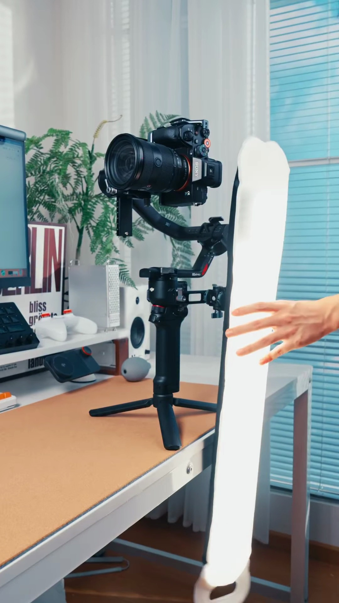
S03 • 1.17s S04 • 1.74s
S04 • 1.74s
 S05 • 2.67s
S05 • 2.67s
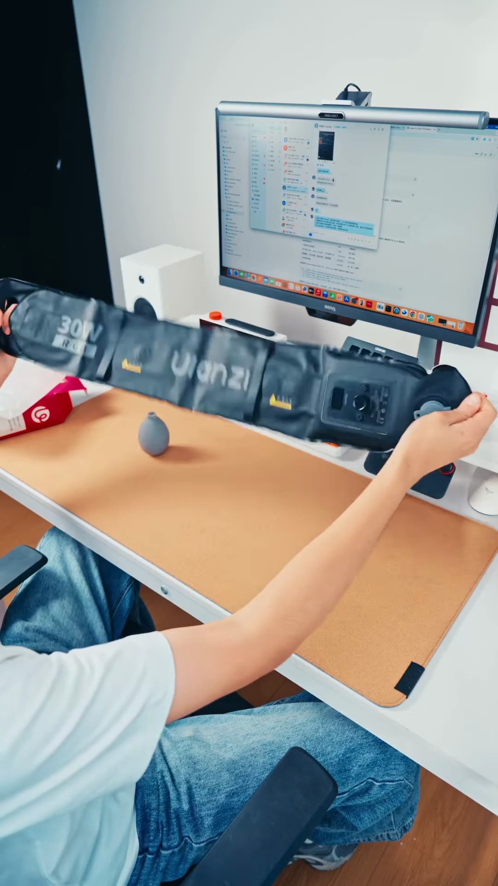
S06 • 4.20s S07 • 4.84s
S07 • 4.84s
 S08 • 5.17s
S08 • 5.17s
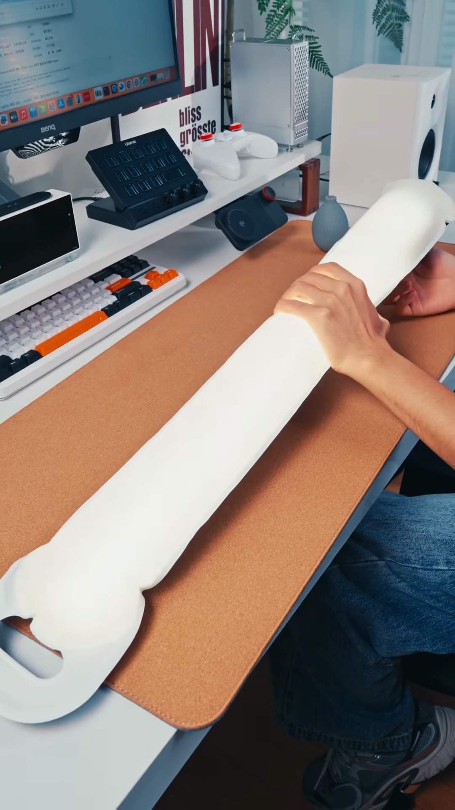
S10 • 7.74s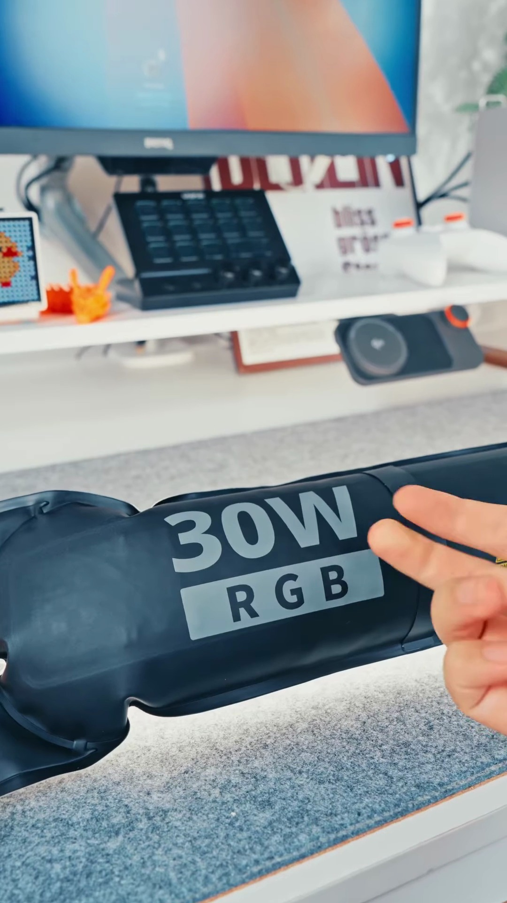
S11 • 8.91s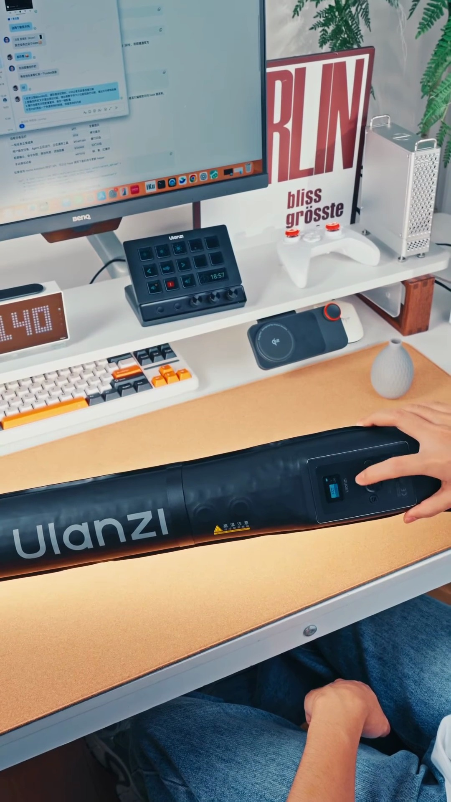
S12 • 9.78s S13 • 11.21s
S13 • 11.21s
 S14 • 14.28s
S14 • 14.28s
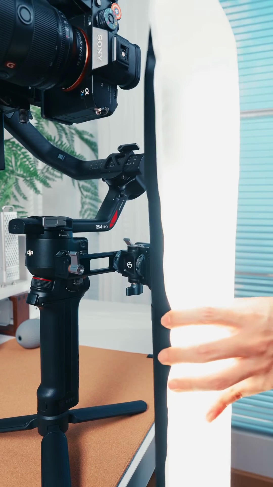
S15 • 15.65s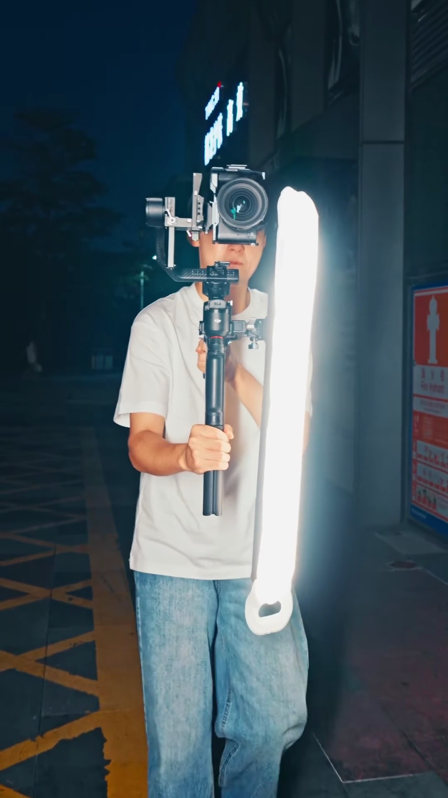
S16 • 16.62s S17 • 18.69s
S17 • 18.69s
Phân Tích Chi Tiết Từng Phân Cảnh (17 Shots)
Cú rơi hộp đập bàn chớp nhoáng: Đòn bẩy thị giác Hook 0.6s đánh thức sự tò mò và mở màn chuỗi B-roll công nghệ
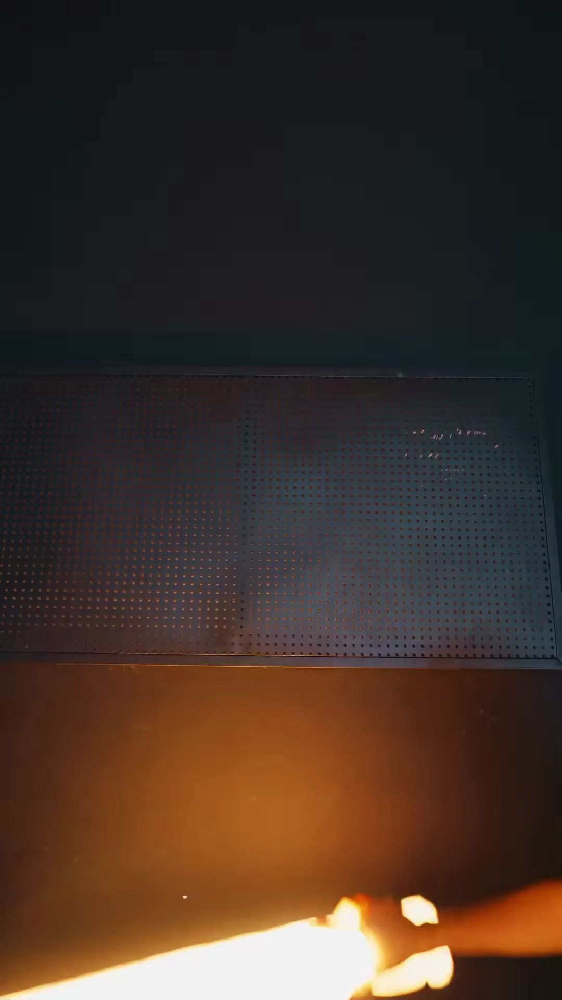
ĐẦU SHOT (0.00s)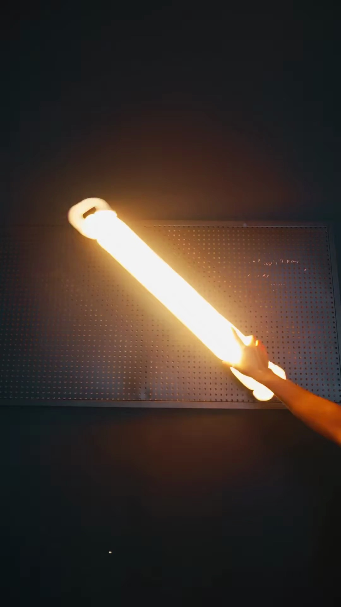
KHOẢNH KHẮC VÀNG (KEYFRAME)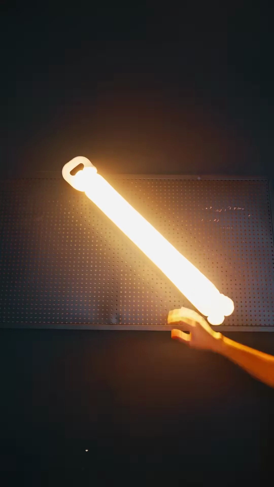
CUỐI SHOT (0.60s)Bàn tay thả dứt khoát chiếc hộp đóng gói Ulanzi LA30 màu xám than/đen nhám rơi thẳng xuống mặt bàn studio. Cú tiếp xúc cơ học tạo độ nảy nhẹ và chuyển động giật mắt kích thích phản xạ chú ý của người xem ngay khung hình đầu tiên.
Tận dụng định luật rơi tự do và âm thanh va đập vật lý (Tactile Thud) tạo xung lực thị giác mạnh mẽ; bao bì tối giản làm nổi bật logo thương hiệu Ulanzi.
Thời lượng 0.60s cực nhanh đòi hỏi nhịp cắt phải chuẩn xác từng frame, nếu trễ 2 frame sẽ mất đi tính đột ngột của cú hook.
Mở đầu video review sản phẩm bằng cú va chạm cơ học dứt khoát là công thức giữ chân người lướt Reel/TikTok hiệu quả gấp 3 lần so với việc đưa sản phẩm lên nói dông dài.

Rút đèn tuýp dạng xẹp khỏi bao: Phô diễn kích thước bỏ túi siêu gọn (Pocket-Sized) hiện thực hóa slogan 'Pack small'
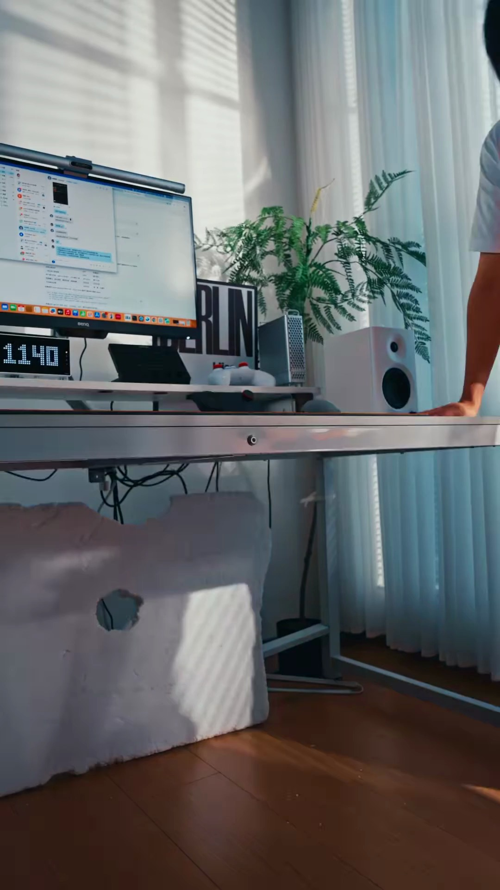
ĐẦU SHOT (0.60s)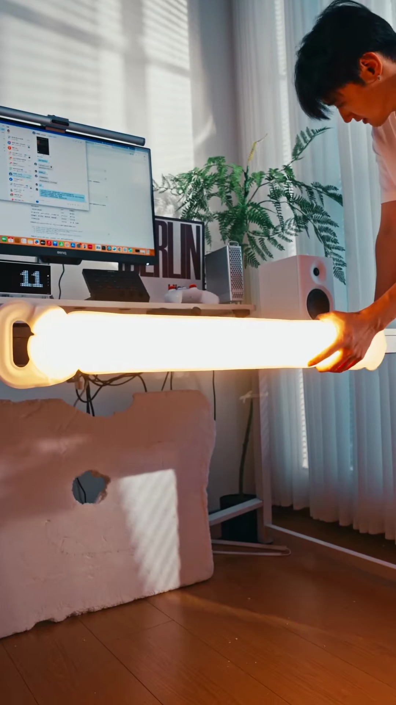
KHOẢNH KHẮC VÀNG (KEYFRAME)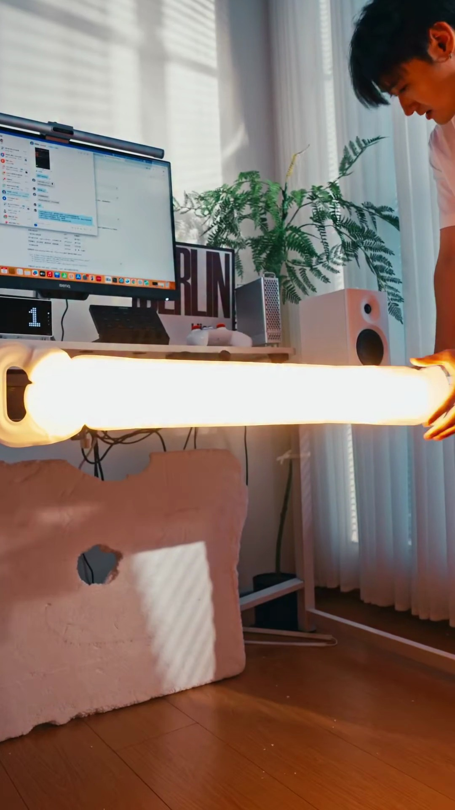
CUỐI SHOT (1.17s)Hai bàn tay kéo thanh đèn LA30 ở trạng thái chưa bơm khí (xẹp phẳng hoàn toàn) ra khỏi túi vải đựng chuyên dụng. Thân đèn cuộn tròn dẹt mỏng, nhỏ gọn chỉ tương đương một chiếc ví cầm tay hoặc cây quạt xếp.
Góc nhìn POV cận cảnh làm nổi bật sự kinh ngạc về kích thước vật lý của một cây đèn công suất 30W; chất liệu vải TPU xẹp phô bày kết cấu thông minh.
Thao tác rút đèn diễn ra trong 0.57s nên chi tiết khóa kéo của túi đựng chỉ lướt qua rất nhanh.
Muốn thuyết phục khách hàng về độ nhỏ gọn ('Pack small'), phải quay cận cảnh lúc sản phẩm ở trạng thái tối giản nhất đặt trong lòng bàn tay người dùng.
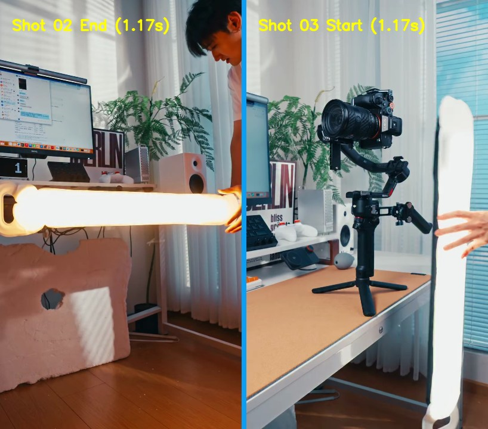
Nhấn nút bơm khí điện tử tự động: Tiết lộ công nghệ bơm vi mô (Auto-Inflation) biến đổi hình thái tức thì
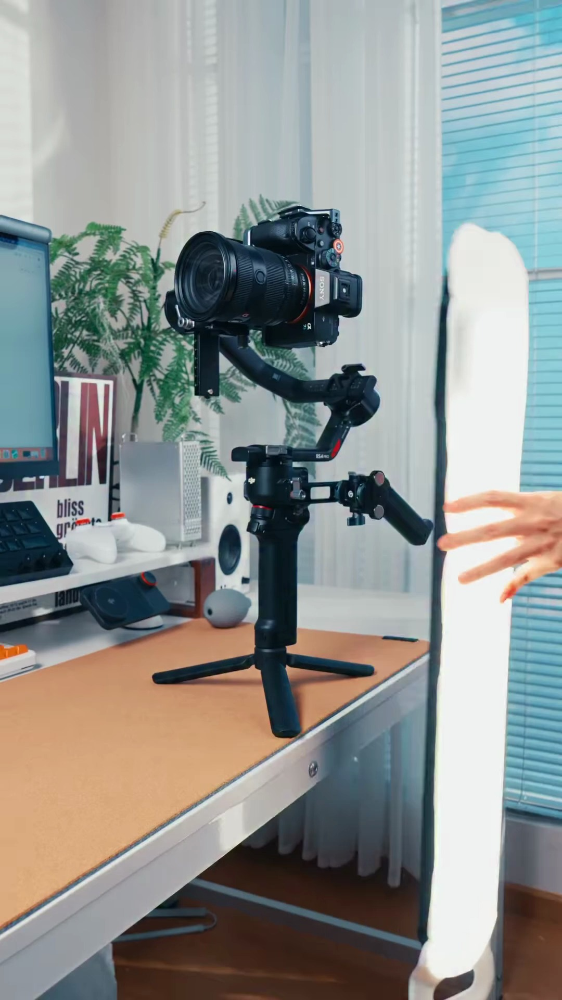
ĐẦU SHOT (1.17s) KHOẢNH KHẮC VÀNG (KEYFRAME)
KHOẢNH KHẮC VÀNG (KEYFRAME)
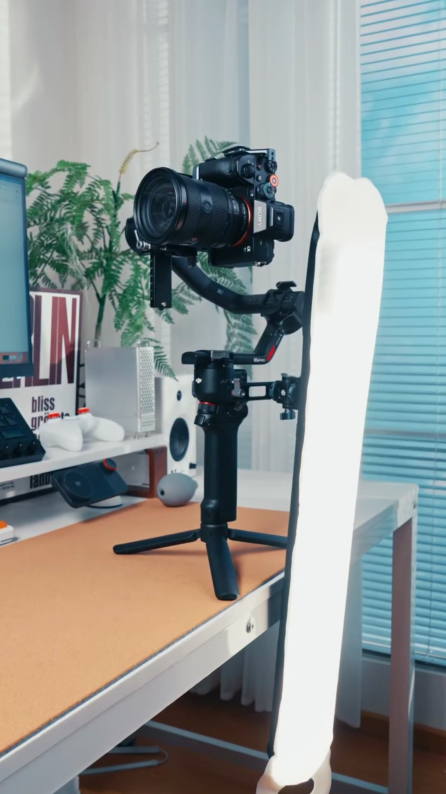
CUỐI SHOT (1.74s)Ngón tay cái bấm dứt khoát vào nút nguồn kiêm kích hoạt bơm khí điện tử mini ở phần đuôi đèn. Động cơ bơm siêu nhỏ bên trong bắt đầu khởi động, nén luồng khí áp suất cao vào khoang túi TPU.
Đặc tả siêu cận cảnh (Macro Extreme Close-Up) nút bấm cơ học, cho thấy sự tinh xảo trong gia công khuôn vỏ nhựa ABS gia cường của Ulanzi.
Ngón tay cái che khuất một phần ký hiệu icon in trên nút nguồn.
Cận cảnh nút bấm công nghệ kèm âm thanh click là điểm neo tâm lý chứng minh thao tác sử dụng hoàn toàn tự động, 'chạm là chạy' không cần thổi bằng miệng.
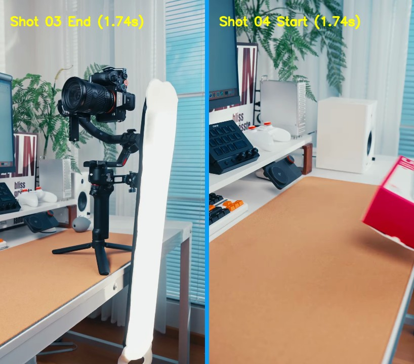
Thân đèn khí phồng to căng tròn: Điểm bùng nổ thị giác (Visual Wow Moment) định hình bản sắc độc bản của LA30
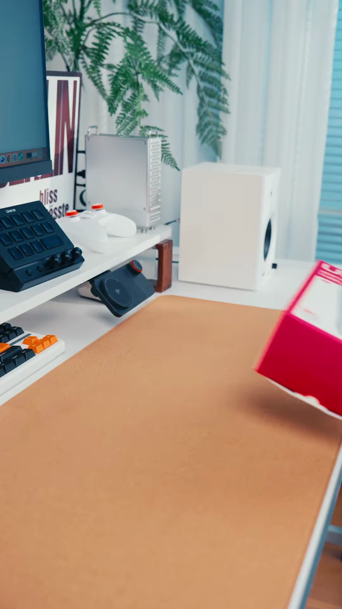
ĐẦU SHOT (1.74s)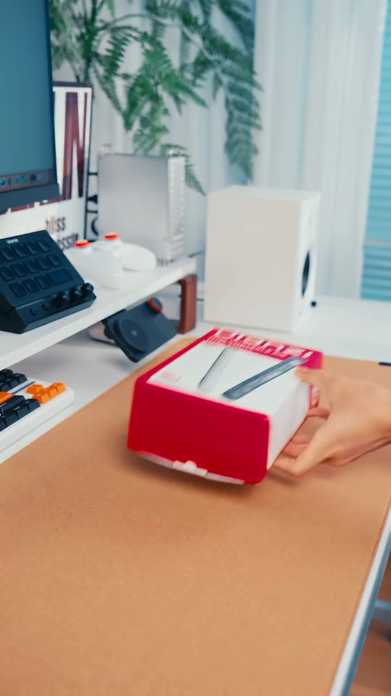
KHOẢNH KHẮC VÀNG (KEYFRAME)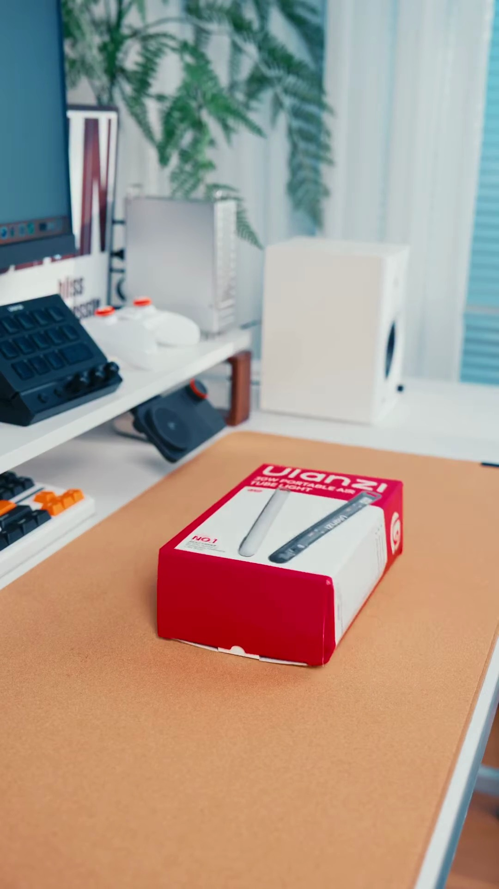
CUỐI SHOT (2.67s)Toàn bộ thân đèn dạng dẹp tự động phồng to thành một cột trụ tròn căng bóng, vững chãi ngay trên tay người dùng trong chưa đầy 1 giây. Không khí được bơm đầy tạo nên một chiếc softbox hình trụ hoàn chỉnh.
Cú máy bắt trọn khoảnh khắc ma thuật khi vật thể tăng thể tích gấp 5 lần chỉ trong tích tắc; dải phản quang ánh sáng lướt trên bề mặt TPU cong tròn tạo cảm giác kỳ diệu.
Tốc độ phồng cực nhanh khiến người xem muốn tua lại để nhìn kỹ hơn cấu trúc túi khí.
Mỗi video commercial thành công bắt buộc phải có một 'Hero Moment' — khoảnh khắc tính năng đột phá nhất của sản phẩm xuất hiện và giải quyết triệt để nỗi đau cồng kềnh của người dùng.
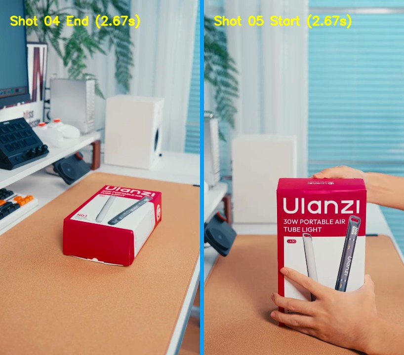
Graphic Title Card nhận diện sản phẩm: Thiết kế typography phong cách Thụy Sĩ khẳng định vị thế Ulanzi LA30
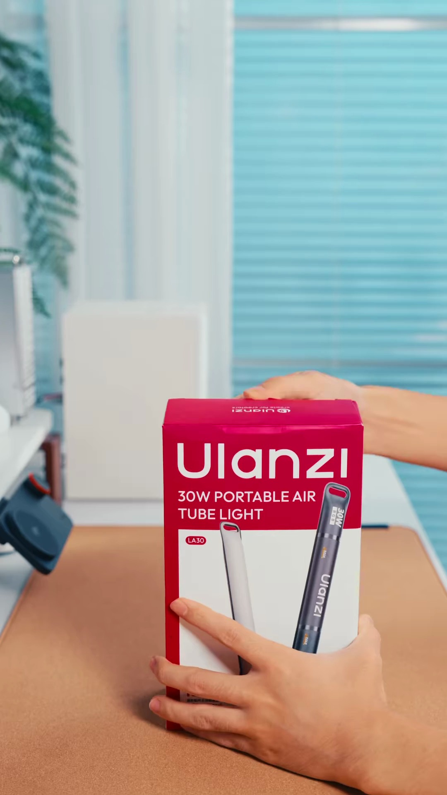
ĐẦU SHOT (2.67s)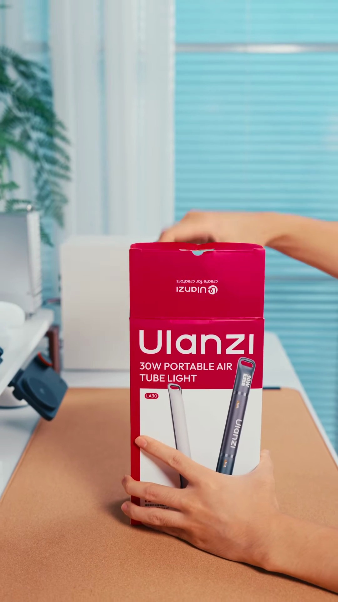
KHOẢNH KHẮC VÀNG (KEYFRAME)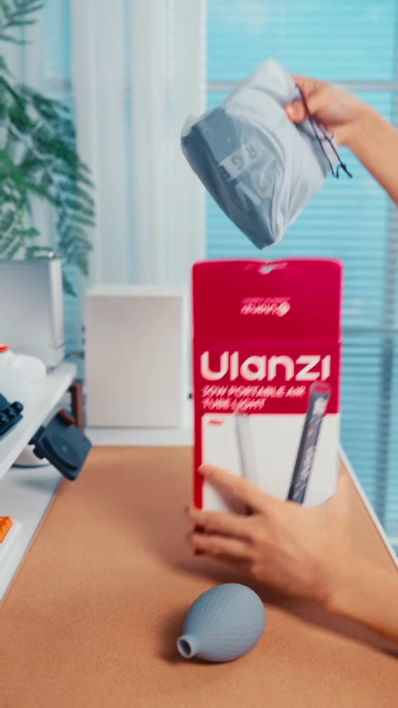
CUỐI SHOT (4.20s)Màn hình Title Card đồ họa chuyển động đậm chất thương mại quốc tế: Dòng chữ in hoa đanh thép '@Ulanzi | create for creators | Ulanzi 30W PORTABLE AIR TUBE LIGHT LA30' xếp lớp tương phản trên nền chuyển động B-roll của đèn.
Bố cục chữ Swiss Style căn lề đối xứng hoàn hảo, truyền tải đầy đủ tên gọi, công suất (30W), định vị (Portable Air Tube Light) và slogan cốt lõi của hãng.
Lượng thông tin chữ tương đối nhiều trong 1.53s đòi hỏi cấu trúc phân cấp kích thước font (Visual Hierarchy) phải cực kỳ rành mạch.
Đặt Title Card nhận diện ở giây thứ 3 (sau khi đã hook người xem bằng hình ảnh hấp dẫn) giúp tỷ lệ ghi nhớ thương hiệu đạt mức tối đa.
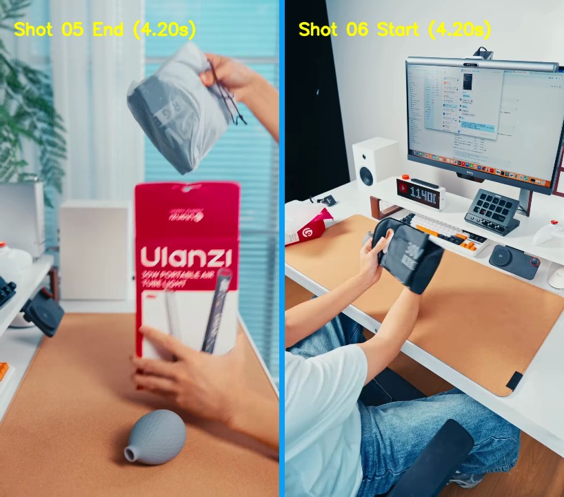
Cận cảnh logo Ulanzi in chìm & nhãn 30W RGB: Chi tiết hoàn thiện cao cấp bảo chứng chất lượng công nghiệp
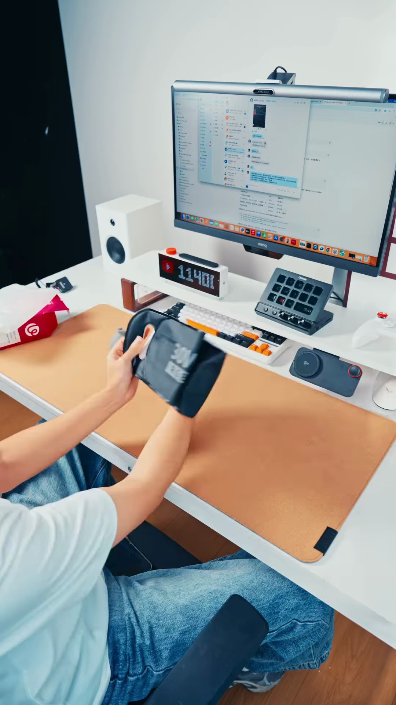
ĐẦU SHOT (4.20s) KHOẢNH KHẮC VÀNG (KEYFRAME)
KHOẢNH KHẮC VÀNG (KEYFRAME)
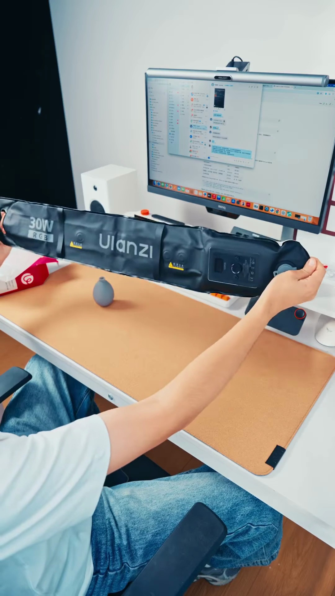
CUỐI SHOT (4.84s)Cú trượt máy Macro tốc độ cao (Macro Probe Slide) lướt ngang thân vỏ, bắt trọn từng đường nét logo Ulanzi in nổi sắc sảo và nhãn thông số kỹ thuật '30W RGB' trên bề mặt vật liệu gia cường.
Độ sắc nét đến từng micromet của vân nhựa nhám và viền hàn nhiệt túi khí TPU; góc chiếu sáng ven làm nổi khối các chữ cái thương hiệu.
Góc lia máy hơi nhanh ở 2 frame cuối trước khi cắt cảnh.
Quay cận cảnh logo và chi tiết hoàn thiện vật liệu (Build Quality Macro) là cách nhanh nhất để tạo niềm tin về chất lượng gia công của sản phẩm.
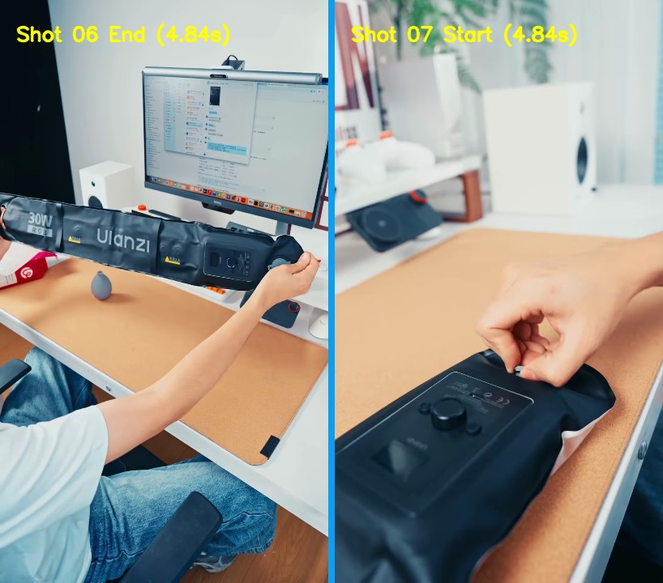
Thao tác núm xoay vô cấp đa chức năng: Giao diện điều khiển công thái học thân thiện và chính xác
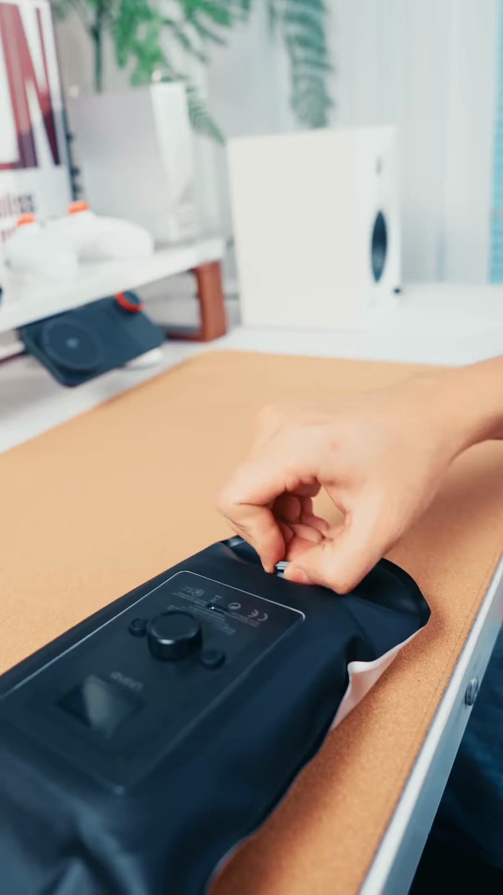
ĐẦU SHOT (4.84s)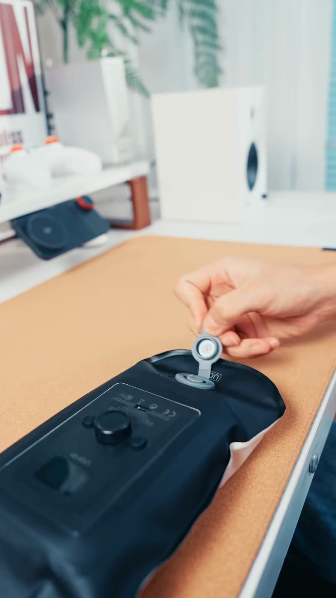
CUỐI SHOT (5.17s)Đầu ngón tay xoay núm điều khiển bánh răng kim loại, tinh chỉnh mượt mà giữa các nấc thông số nhiệt độ màu và cường độ phát quang.
Cận cảnh thao tác tay thể hiện rõ tính công thái học (Ergonomics); các khía rãnh trên núm xoay tạo điểm tựa ma sát bám ngón tay hoàn hảo.
Thời lượng 0.33s là shot ngắn nhất video (chớp mắt) đóng vai trò như một cú nối nhịp điệu (Rhythmic J-Cut).
Trong dựng phim commercial nhịp nhanh, các shot micro-beat 0.3-0.4s dùng để đẩy nhanh nhịp tim người xem trước khi chuyển sang đại cảnh.

Trình diễn bề mặt tán quang khí 360 độ: Ánh sáng mềm mại không góc chết triệt tiêu đốm bóng gắt
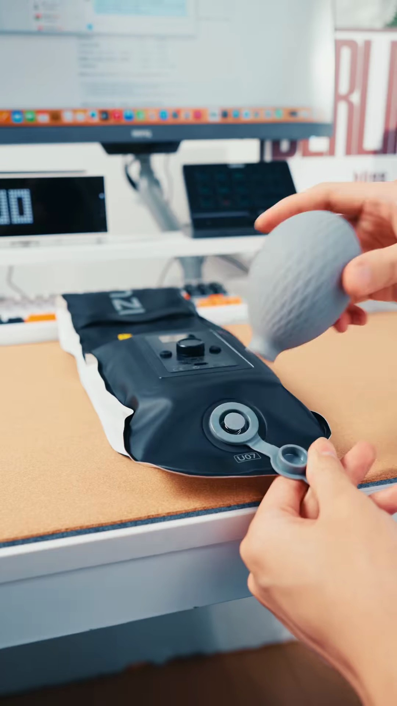
ĐẦU SHOT (5.17s)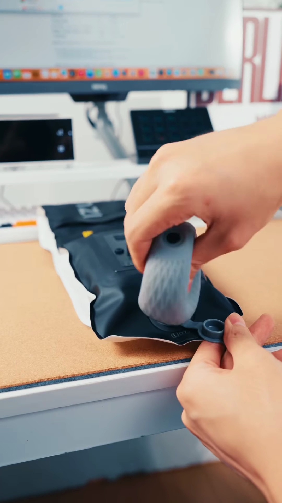
KHOẢNH KHẮC VÀNG (KEYFRAME)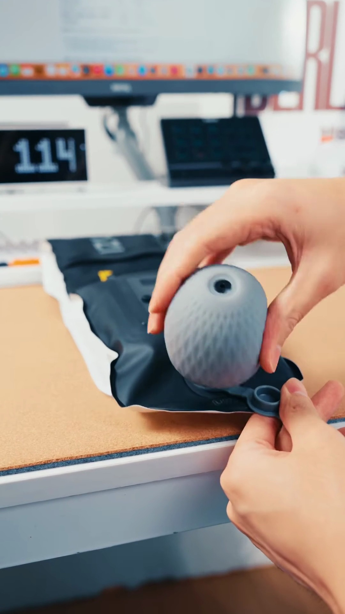
CUỐI SHOT (6.31s)Thanh đèn LA30 bật sáng rực rỡ, bàn tay lướt nhẹ dọc thân bóng khí. Khoang khí TPU đóng vai trò như một hộp tản sáng Softbox 360 độ tự nhiên, phân bổ luồng sáng đồng nhất, xóa bỏ hoàn toàn hiện tượng chói lóa hay đốm hạt LED (Hotspots).
Phô diễn ưu thế cốt lõi của công nghệ Air Tube Light so với đèn LED thanh truyền thống: Nguồn sáng diện tích lớn giúp đổ bóng da người siêu mịn màng.
Vùng sáng ở tâm đèn có độ phơi sáng cao, cần căn chỉnh dải dynamic range cẩn thận để không bị cháy sáng (Clipping).
Khi quay video bán đèn, việc chứng minh ánh sáng 'mềm' và 'tản đều' qua tương tác chạm tay mang tính thuyết phục thị giác mạnh hơn ngàn lời quảng cáo thông số.

Hít nam châm từ tính lên thanh giá đỡ: Giải pháp cố định thần tốc (Magnetic Rigging) cho Solo Creator
 KHOẢNH KHẮC VÀNG (KEYFRAME)
KHOẢNH KHẮC VÀNG (KEYFRAME)
Bàn tay đưa thanh đèn LA30 áp sát vào cột kim loại studio, các phiến nam châm từ tính siêu mạnh tích hợp bên trong lập tức hút chặt đèn vào cột với một cú 'Snap' đanh ròn, giữ đèn cố định chắc chắn mà không cần bất kỳ ốc vít hay kẹp cồng kềnh nào.
Góc máy trung cảnh lột tả tính tiện dụng tột bậc khi làm việc một mình (Solo Filmmaking); vị trí hít linh hoạt theo mọi phương thẳng đứng hay nằm ngang.
Khoảng cách máy hơi rộng khiến chi tiết mặt lưng nam châm chưa được đặc tả tối đa.
Tính năng nam châm là vũ khí bán hàng số 1 cho các creator hiện đại — gắn đèn lên mọi bề mặt kim loại trong 1 giây biến mọi không gian thành phim trường.
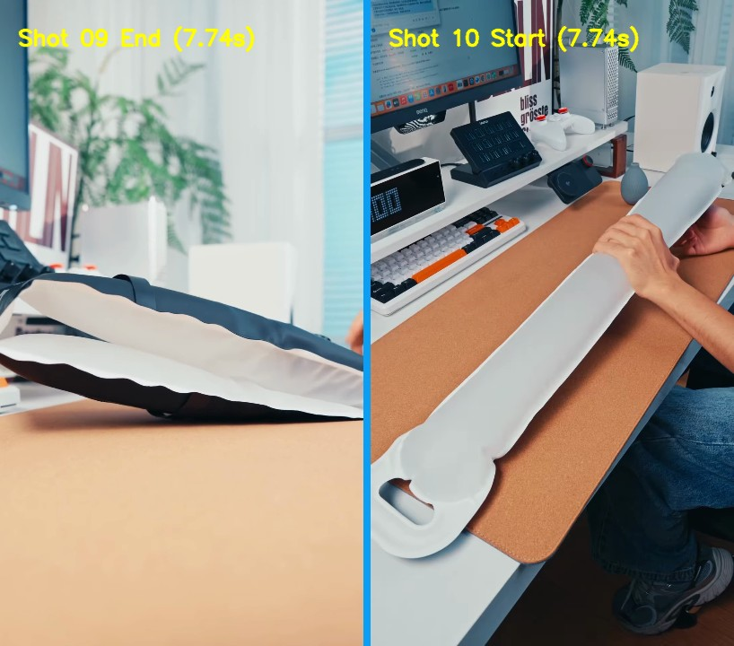
B-Roll góc bàn làm việc Minimalist Desk Setup: Ánh sáng hòa quyện không gian sáng tạo công nghệ cao
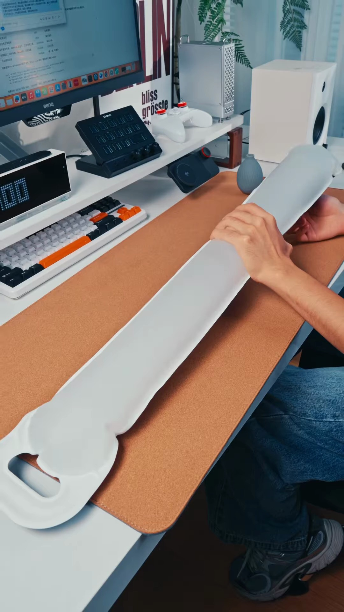
ĐẦU SHOT (7.74s) KHOẢNH KHẮC VÀNG (KEYFRAME)
KHOẢNH KHẮC VÀNG (KEYFRAME)
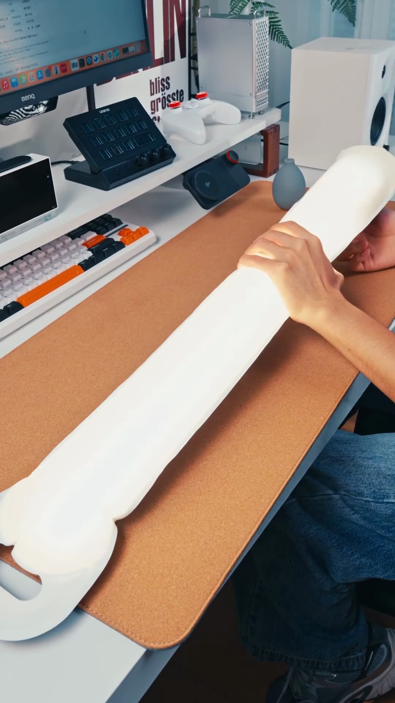
CUỐI SHOT (8.91s)Toàn cảnh góc bàn làm việc hiện đại của creator: Màn hình BenQ cao cấp hiển thị hình nền thiên nhiên 'Bliss', bàn phím cơ tối giản, và thanh đèn LA30 được bố trí phía sau làm đèn Key/Fill Light tôn vinh trọn vẹn không gian làm việc.
Bố cục thiết lập không gian (Establishing Shot) mang tính thẩm mỹ cao, kết nối sản phẩm với lối sống của dân làm sáng tạo nội dung chuyên nghiệp.
Đèn LA30 nằm ở góc rìa khung hình nên vai trò chiếu sáng cần được làm nổi bật hơn qua hiệu ứng trước/sau.
Đặt thiết bị quay phim vào bối cảnh đời thực sang trọng (Dream Desk Setup) giúp nâng tầm định vị sản phẩm từ một món đồ nghề đơn thuần thành biểu tượng phong cách sống.
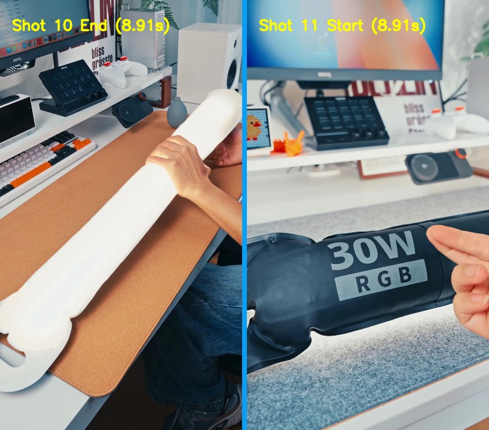
Cận cảnh màn hình OLED: Chế độ CCT 5600K 100% công suất kiểm soát màu chuẩn xác chuẩn Studio
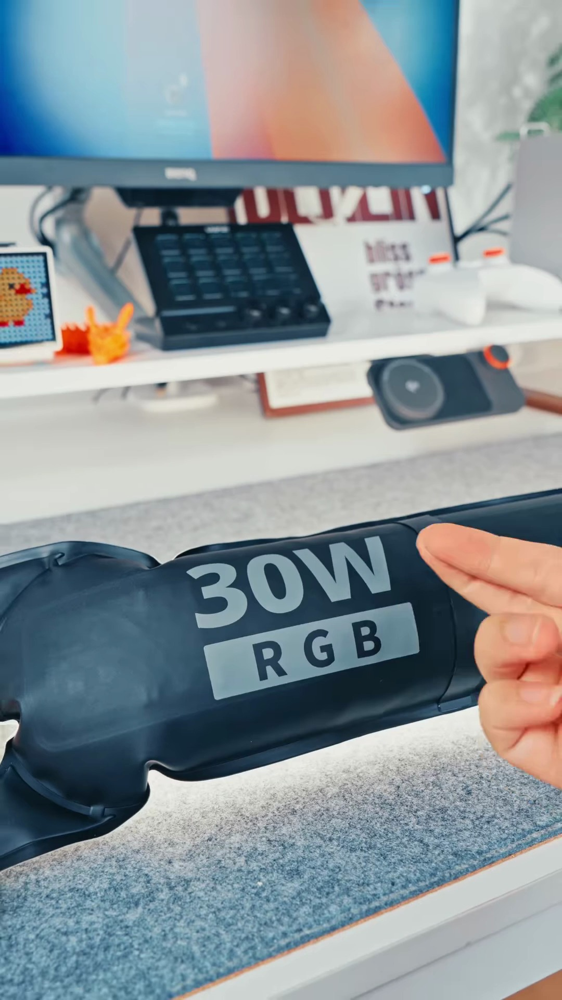
ĐẦU SHOT (8.91s) KHOẢNH KHẮC VÀNG (KEYFRAME)
KHOẢNH KHẮC VÀNG (KEYFRAME)
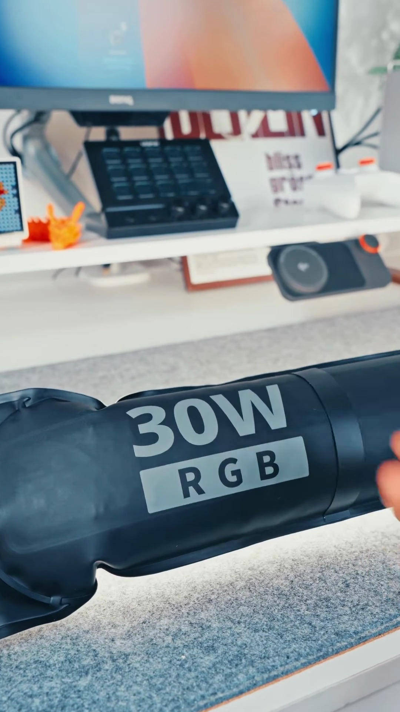
CUỐI SHOT (9.78s)Màn hình OLED mini hiển thị thông số thời gian thực sắc nét: Độ sáng 100%, Nhiệt độ màu chuẩn ánh sáng ban ngày 5600K, thời lượng pin và logo 30W RGB rực rỡ trên nền đen.
Góc quay Macro trực diện khẳng định khả năng điều khiển thông số kỹ thuật chính xác cho các nhà làm phim chuyên nghiệp đòi hỏi độ chuẩn màu cao.
Thời lượng 0.87s ngắn gọn, người xem chỉ kịp nhận diện các con số chính.
Hiển thị màn hình OLED với các thông số chuẩn xác (5600K, 100%, 30W) là bằng chứng không thể chối cãi về đẳng cấp thiết bị chuyên nghiệp.
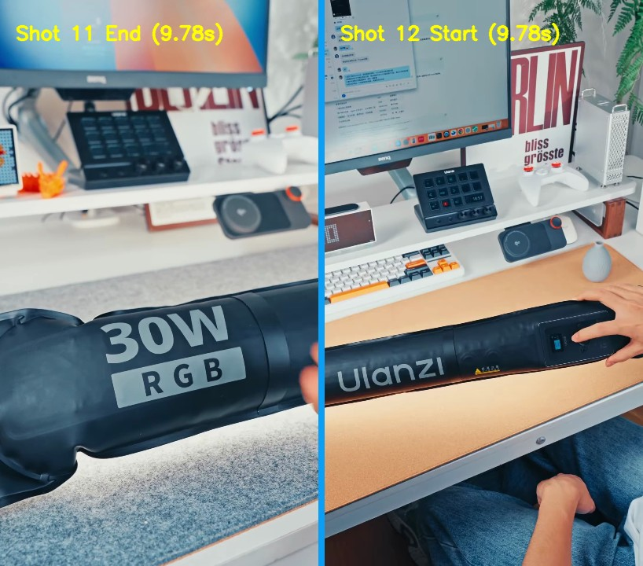
Vũ điệu biến đổi dải màu RGB sống động: Phép màu màu sắc thắp sáng không gian làm việc
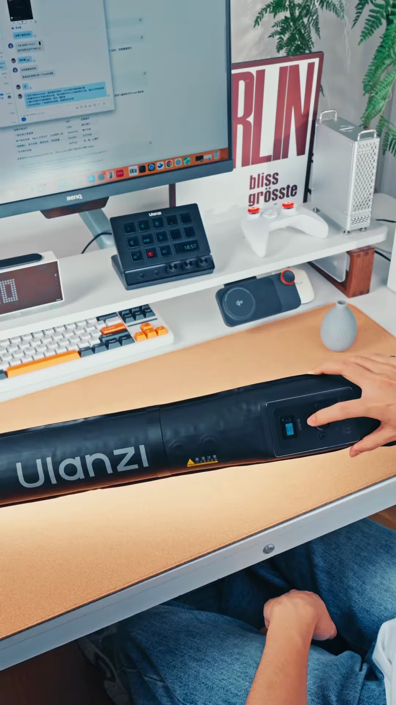
ĐẦU SHOT (9.78s) KHOẢNH KHẮC VÀNG (KEYFRAME)
KHOẢNH KHẮC VÀNG (KEYFRAME)
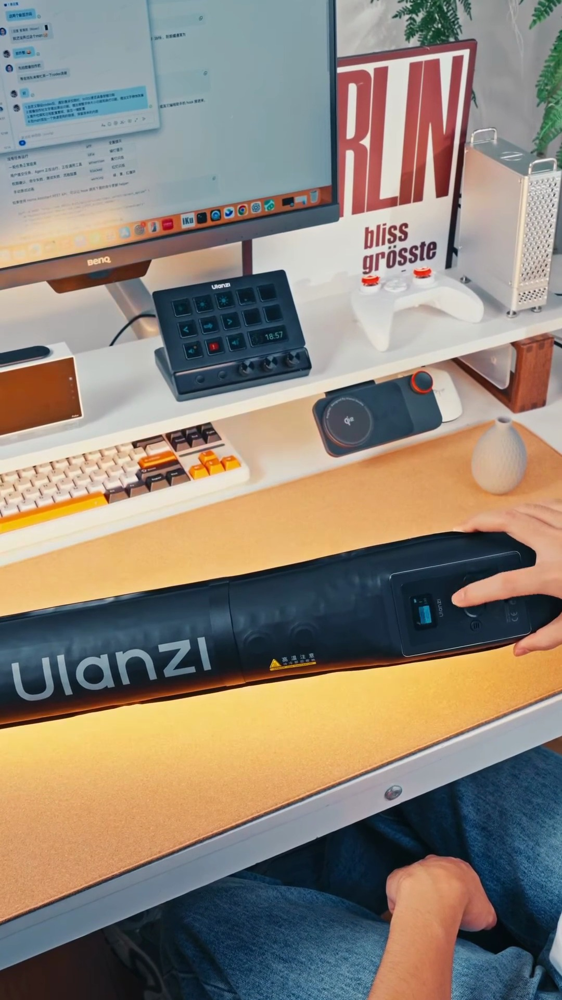
CUỐI SHOT (11.21s)Thanh đèn LA30 chuyển đổi mượt mà từ ánh sáng trắng Daylight sang dải màu RGB rực rỡ, ánh sáng xanh lam và tím hồng phủ kín bức tường và phản chiếu lộng lẫy lên màn hình BenQ.
Sự tương phản màu sắc sống động (Color Saturation Dynamics) thay đổi 180 độ cảm xúc của toàn bộ căn phòng từ trang nhã sang huyền bí.
Màu sắc chuyển biến nhanh có thể gây choáng ngợp nhẹ cho thị giác người xem.
Hiệu ứng đổi màu RGB trong không gian thực tế luôn là shot quay tạo cảm xúc hưng phấn cao độ, kích thích quyết định mua hàng tức thì.
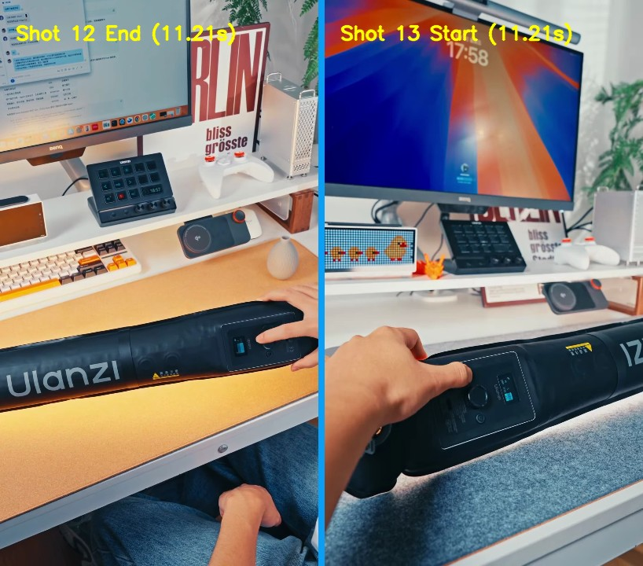
Không gian Cyberpunk tím hồng & Đồng hồ 17:58: Điểm lắng thị giác 3s chiêm ngưỡng công năng kiến tạo Mood
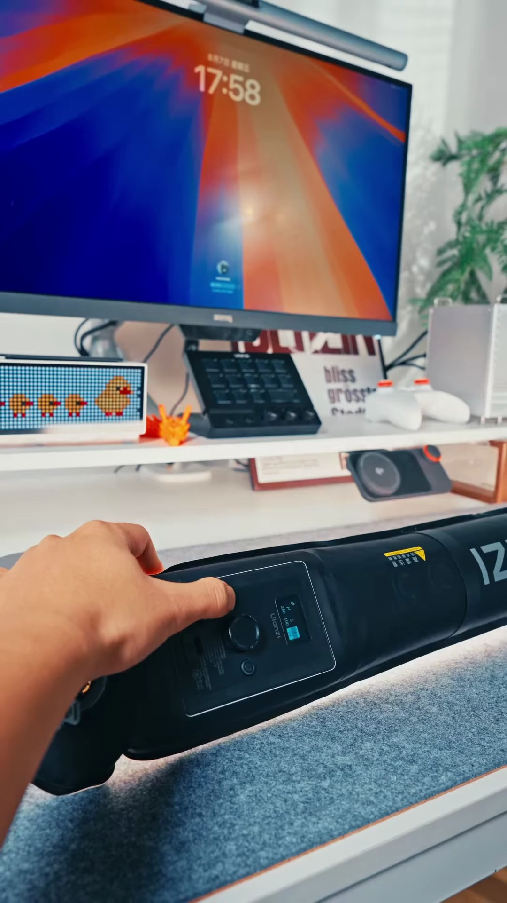
ĐẦU SHOT (11.21s)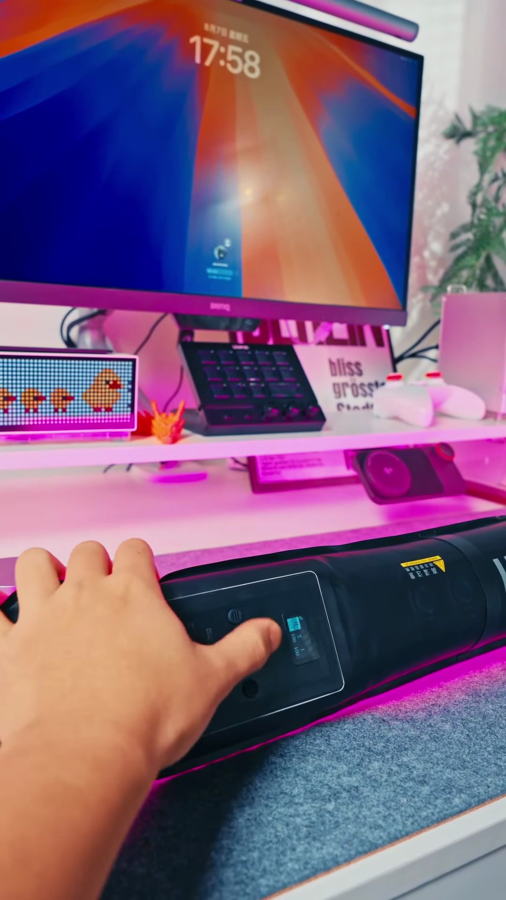
KHOẢNH KHẮC VÀNG (KEYFRAME)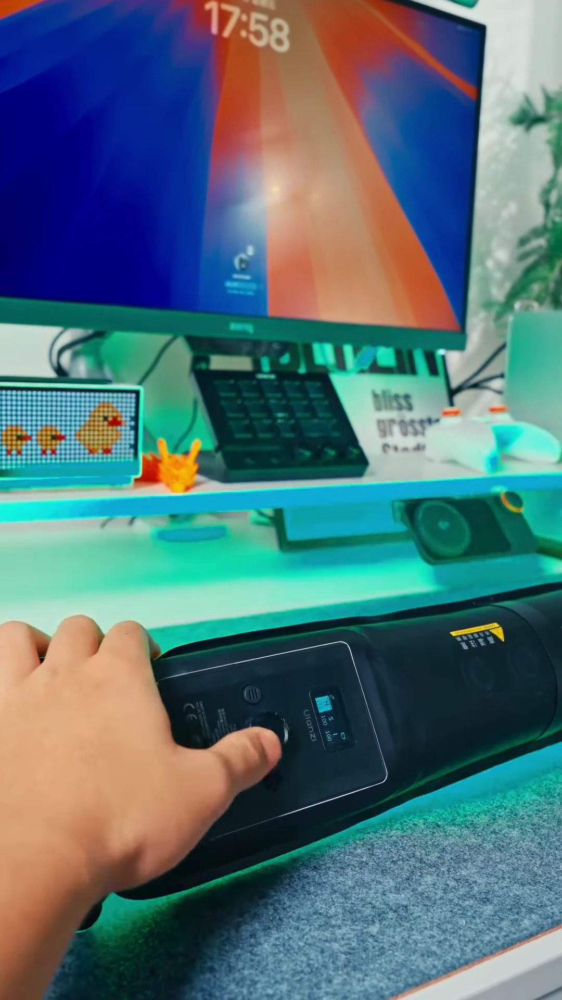
CUỐI SHOT (14.28s)Shot dài nhất video (3.07s): Thanh đèn LA30 tỏa sáng với sắc tím hồng neon rực rỡ ở công suất 100% đặt cạnh màn hình hiển thị đồng hồ 17:58. Tác giả tạo ra một khung cảnh đậm chất điện ảnh khoa học viễn tưởng ngay trong phòng làm việc cá nhân.
Thời lượng 3.07s đóng vai trò 'nhịp thở điện ảnh' (Cinematic Breathing Point), cho phép mắt người xem đắm chìm hoàn toàn vào vẻ đẹp của ánh sáng; tỷ lệ tương phản hoàn hảo.
Khung hình có độ bão hòa màu cao, cần màn hình chuẩn màu để hiển thị trọn vẹn dải sắc tố.
Sau chuỗi shot cắt nhanh 0.5s-1s, luôn cần một cú máy dài 3s giữ nguyên góc nhìn để người xem thẩm thấu trọn vẹn giá trị cảm xúc của sản phẩm.
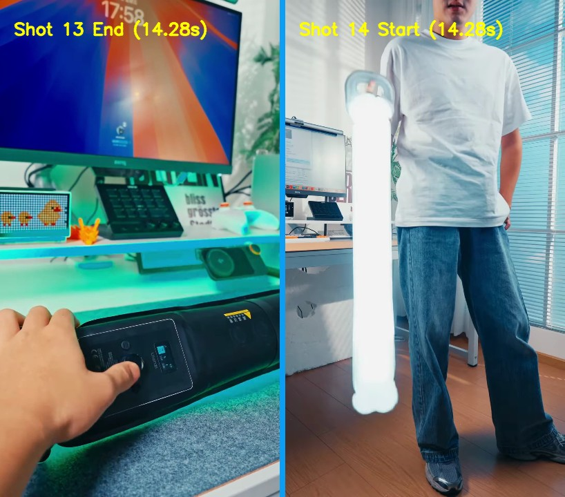
Cầm tay thanh đèn di chuyển cơ động: Khả năng 'Vẽ ánh sáng' (Painting with Light) tự do không dây nhợ
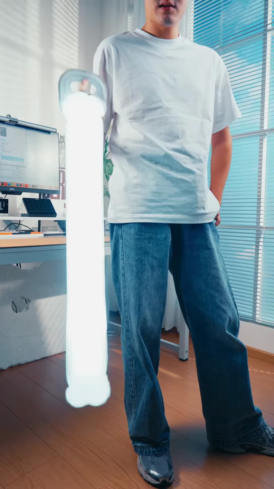
ĐẦU SHOT (14.28s)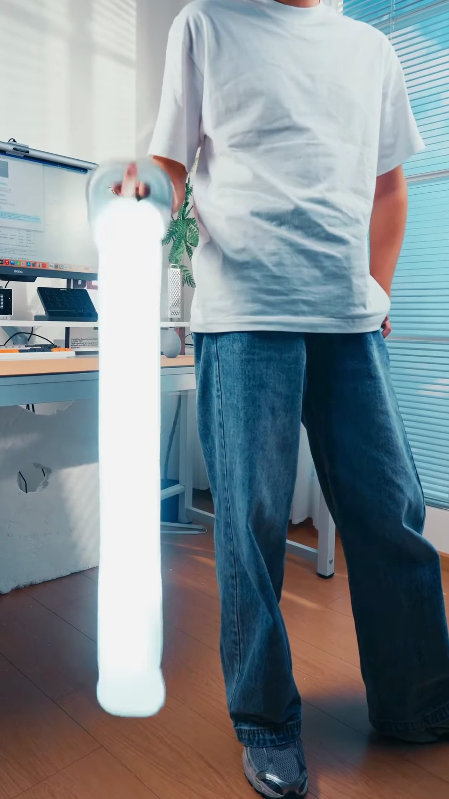
KHOẢNH KHẮC VÀNG (KEYFRAME)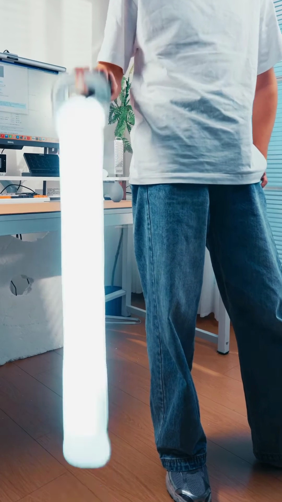
CUỐI SHOT (15.65s)Bàn tay cầm thanh đèn LA30 nhẹ nhàng lia quét quanh không gian. Nhờ trọng lượng lông vũ của thân đèn bơm hơi và pin tích hợp bền bỉ, người quay phim tự do di chuyển nguồn sáng theo ý muốn mà không bị cản trở bởi dây nguồn.
Cú máy chuyển động cầm tay (Handheld Tracking) phô diễn độ linh hoạt tột đỉnh khi tác nghiệp ngoài hiện trường (Run-and-Gun Filmmaking).
Chuyển động tay nhanh làm đuôi đèn hơi lướt ra ngoài viền khung hình trong tích tắc.
Đèn quay phim thế hệ mới phải giải phóng người dùng khỏi chân đèn và dây cắm — quay cảnh cầm tay quét sáng là cách trực quan nhất để chứng minh tính di động.
Kết hợp hệ thống máy quay Cinema: Rig Sony GM II trên Gimbal RS4 Pro khẳng định chuẩn mực chuyên nghiệp
 KHOẢNH KHẮC VÀNG (KEYFRAME)
KHOẢNH KHẮC VÀNG (KEYFRAME)
Khung hình đặc tả bộ vũ khí làm phim hạng nặng: Thân máy ảnh Sony cao cấp kết hợp ống kính huyền thoại Sony FE 2.8/24-70 GM II được cân bằng trên Gimbal DJI RS4 Pro, với đèn LA30 đóng vai trò nguồn sáng chủ đạo bên cạnh.
Góc quay cận cảnh dàn thiết bị đỉnh cao (Pro Rigging Showcase) nâng tầm uy tín của đèn LA30: Đây không phải đồ chơi cá nhân mà là công cụ đắc lực cho các đoàn phim chuyên nghiệp.
Ống kính GM II và Gimbal RS4 Pro quá nổi bật có thể phân tán sự chú ý vào chiếc đèn trong nửa giây đầu.
Đặt sản phẩm phụ kiện bên cạnh các thiết bị đầu bảng ngành (Sony G-Master, DJI Ronin) là chiêu thức 'mượn uy tín' (Authority by Association) kinh điển và hiệu quả nhất.
Chiếu sáng phân tách chủ thể trong bóng tối: Công suất 30W cực đại tạo ven sáng Rim Light điện ảnh hoàn hảo
 KHOẢNH KHẮC VÀNG (KEYFRAME)
KHOẢNH KHẮC VÀNG (KEYFRAME)
Trong không gian studio tối hoàn toàn, thanh đèn LA30 phát huy toàn bộ công suất 30W tạo nên đường ven sáng sắc lẹm (Sharp Rim Light) bao bọc chủ thể, tách biệt hoàn toàn người quay phim khỏi phông nền đen sâu thẳm.
Hiệu ứng tương phản ánh sáng Chiaroscuro đỉnh cao, chứng minh khả năng chiếu sáng thực chiến với cường độ lumen vượt trội dù kích thước bỏ túi.
Vùng tối chiếm 70% diện tích khung hình, đòi hỏi người xem tập trung cao độ vào đường viền chủ thể.
Cú chốt hạ tính năng bằng một khung hình điện ảnh tương phản cao là cách kết thúc phần trình diễn kỹ thuật ấn tượng nhất trước khi xuất hiện logo.

Outro logo Ulanzi - 'create for creators': Kết thúc tối giản thanh lịch khắc sâu thương hiệu vào tâm trí
 ĐẦU SHOT (18.69s)
KHOẢNH KHẮC VÀNG (KEYFRAME)
ĐẦU SHOT (18.69s)
KHOẢNH KHẮC VÀNG (KEYFRAME)
 CUỐI SHOT (19.89s)
CUỐI SHOT (19.89s)
Màn hình chuyển sang màu trắng phẳng tinh khôi. Logo nhận diện thương hiệu '@Ulanzi' cùng câu định vị bất hủ 'create for creators' xuất hiện kiêu hãnh ở vị trí trung tâm, chốt hạ video quảng cáo mẫu mực.
Thiết kế đồ họa tối giản chuẩn mực quốc tế, độ tương phản tuyệt đối giữa nền trắng và chữ đen tạo cảm giác minh bạch, chuyên nghiệp và đáng tin cậy.
Thời lượng 1.20s kết thúc vừa vặn với nhịp loop của Instagram Reels.
Luôn kết thúc video bằng Call-To-Action hoặc Logo thương hiệu trên nền tối giản để đọng lại ấn tượng sau cùng trong tâm trí khách hàng.
Hướng Dẫn Ứng Dụng Thực Chiến Cho Creator Việt Nam
- Đèn Key Light siêu mềm: Tận dụng khoang khí TPU của LA30 đặt cách mặt 1m ở góc 45 độ, xóa tan bọng mắt và nếp nhăn mà không cần softbox 90cm cồng kềnh.
- Đèn Ven Tóc (Hair Light): Gắn nam châm lên thanh dầm sắt hoặc giá sách phía sau lưng, tạo đường viền sáng tách chủ thể khỏi tường tối.
- Đèn Mood RGB: Chuyển sang chế độ màu tím (Magenta) hoặc xanh Cyberpunk hắt lên vách tường gỗ hoặc kệ sách, tạo chiều sâu thị giác chuẩn YouTuber quốc tế.
- Quy tắc 3 Nhịp Mở Màn: Nhịp 1 (0-0.6s) Thả rơi hộp ➔ Nhịp 2 (0.6-1.2s) Rút ruột sản phẩm ➔ Nhịp 3 (1.2-2.5s) Biến hình/Kích hoạt tính năng mạnh nhất.
- Đồng Bộ Âm Thanh Xúc Giác (Foley ASMR): Luôn phóng đại tiếng bấm nút click, tiếng khí nén và tiếng nam châm hít chặt lớn hơn nhạc nền 3-5dB để tạo khoái cảm giác quan.
- Chèn Title Card ở giây thứ 3: Chỉ đưa tên sản phẩm và thương hiệu sau khi người xem đã bị hút mắt bởi tính năng độc lạ, không đưa lên ngay giây đầu.